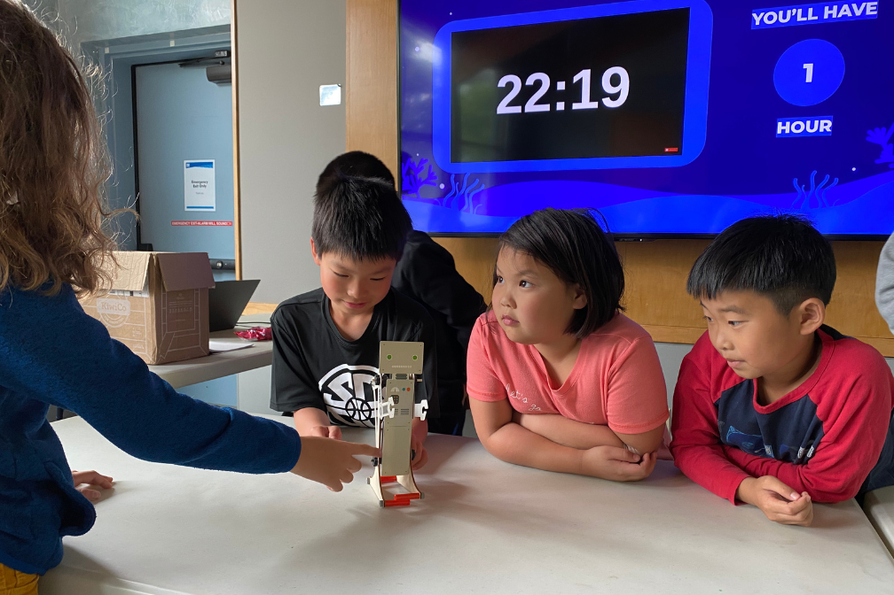
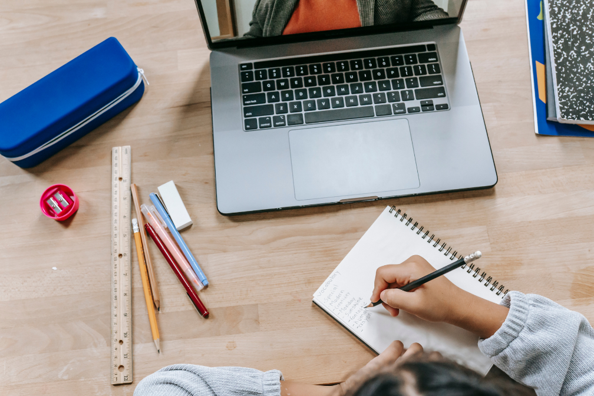

UpSTREAM teaches STREAM (Science, Technology, Robotics, Engineering, Arts, Mathematics) to Seattle students in Grades 3-6, working
to bridge gaps caused by disproportionate access to STREAM opportunities in South Seattle. Founded by students driven by their ambition to contribute to their community,
UpSTREAM offers three free programs: STREAM Labs, a quarterly in-person workshop; LiveSTREAMs, a monthly online workshop;
and Online Tutoring, a weekly 1:1 tutoring service.

STREAM Workshops
UpSTREAM provides free STREAM workshops for students in Grades 3-6: STREAM Labs, seasonal in-person workshop, and LiveSTREAMs, monthly virtual workshops.
Next LiveSTREAM: Motion & Energy, January 27 from 1:00 PM to 2:00 PM
Next STREAM Lab: The Robotics Lab, April 8 from 12:00 PM to 3:00 PM
Students in these workshops engage in hands-on activities involving STREAM topics ranging from physics to robotics and connect these topics to society.

Online Tutoring
UpSTREAM provides free online tutoring for students in Grades 3-6! Online Tutoring allows students to supplement their academic performance.
Weekdays: After 4:00 PM for Reading or Mathematics
Weekends: Weekends: After 9:00 AM for Writing, Reading, or Mathematics
Students in this program engage in 1:1 sessions with a qualified Seattle high school student, providing an excellent source of instructional guidance.